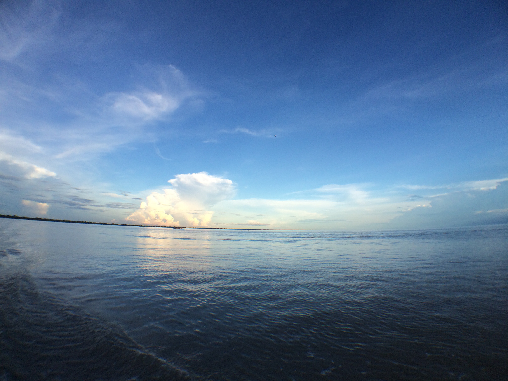

<!--<body background="img/4041.JPG" background-size=contain>
 <div id="div1"> 
<h3 id="toc_2">解决办法一：在<a href="http://cnfeat.com/archive/">文章存档</a>中找</h3>
</div>
-->

<h4>Opps...你来到了一个找不到的页面<br/><br/></h4><h5>
	
	发生这种情况有可能是因为chaojimiaomiao小姐已经删除了某篇文章<br/><br/>
	
	或许，你可以到 <a href="archive/">归档文章</a>中去寻找<br/><br/>
	
	也可以给我留言<br/><br/>
	
</h5>

<div id="disqus_thread"></div>
{% include disqus.html %}
{% endif %}
